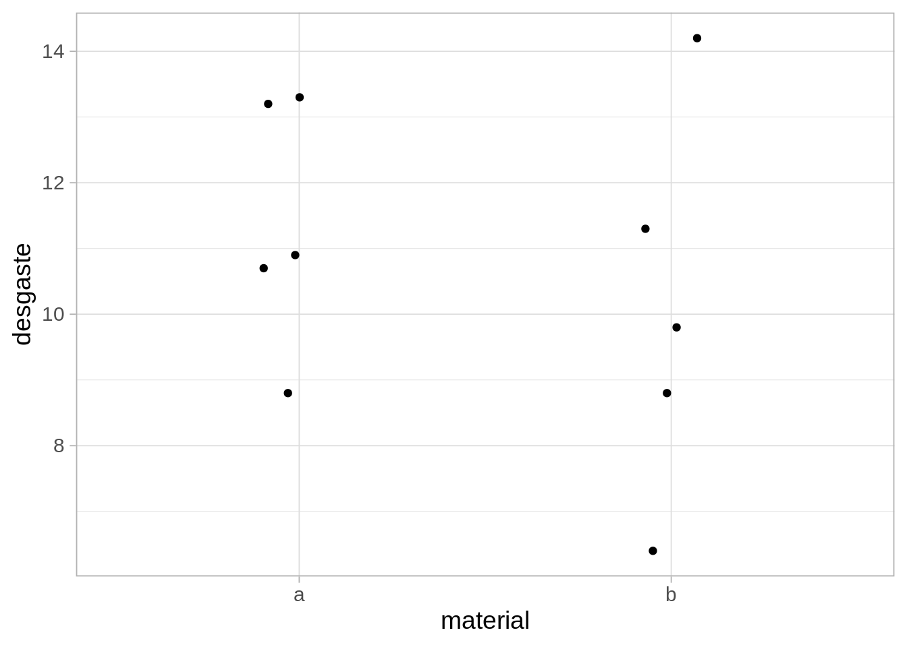
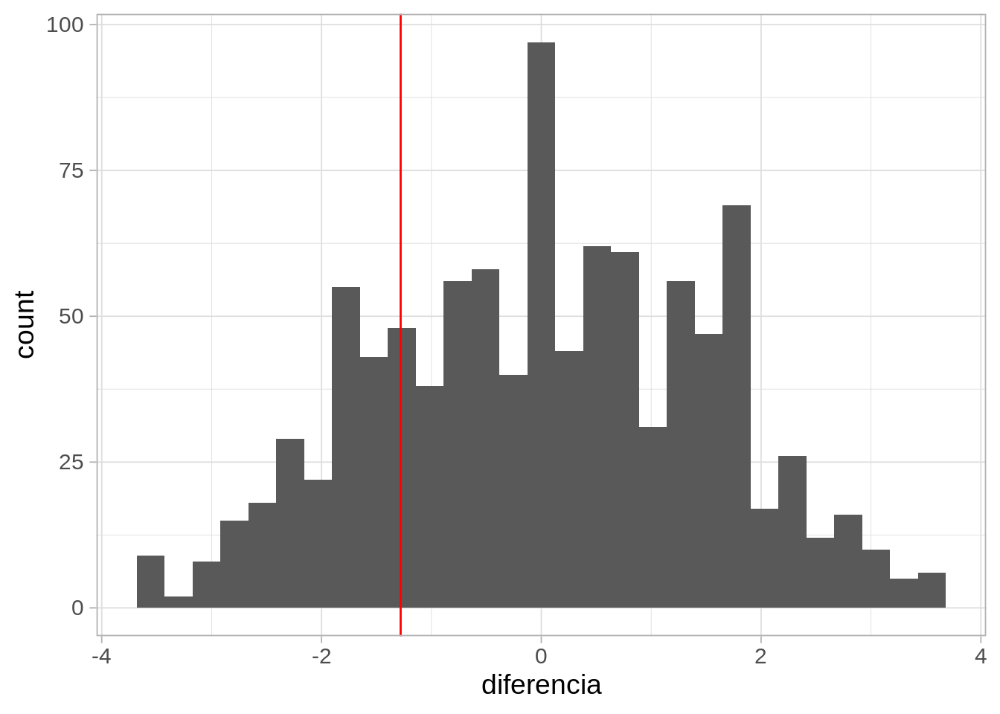
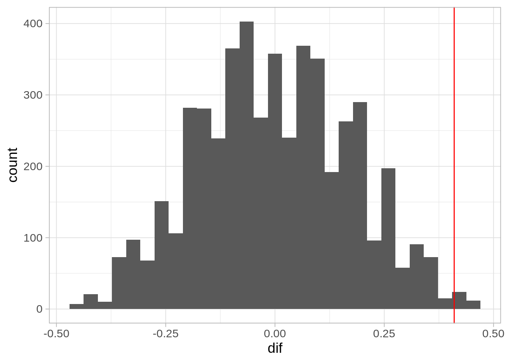

8 Diseño de experimentos e inferencia
En los ejemplos que vimos en la sección anterior, consideramos siempre que el tratamiento se asigna al azar a cada individuo o unidad experimental. Cuando tenemos más información acerca del problema, podemos diseñar esquemas que mejoran la precisión controlando fuentes de variación.
La técnica básica para hacer esto es el bloqueo. Si las unidades experimentales vienen en grupos que son relativamente homogéneos, entonces tiene sentido considerar esos grupos
8.1 Ejemplo: zapatos de niños
En el siguiente ejemplo clásico de (Box et al. (1978)), nos interesa probar un material nuevo para suela de zapatos (el material B) y ver si es comparable con el material que se usa normalmente (el material A).
Supongamos en primer lugar que aleatorizamos el material entre los 10 niños y después de cierto tiempo, medimos el desgaste.
Código
datos_zapatos <- read_table("datos/zapatos.txt") |>
mutate(lado = c("i", "d", "i", "d", "d", "i", "i", "d", "d", "i", "i", "d",
"i", "d", "i", "d", "d", "i", "i", "d")) |>
mutate(material = ifelse(material == 1, "a", "b"))
set.seed(2312)
zapatos_1 <- datos_zapatos |> group_by(niño) |>
slice_sample(n = 1) |>
select(niño, material, desgaste) |>
ungroup()
zapatos_1# A tibble: 10 × 3
niño material desgaste
<dbl> <chr> <dbl>
1 1 a 13.2
2 2 b 8.8
3 3 a 10.9
4 4 b 14.2
5 5 a 10.7
6 6 b 6.4
7 7 b 9.8
8 8 b 11.3
9 9 a 8.8
10 10 a 13.3Veamos los datos:
Código
ggplot(zapatos_1, aes(x = material, y = desgaste)) + geom_jitter(width = 0.1, height = 0)
Código
diferencia_obs <- zapatos_1 |>
group_by(material) |>
summarise(media = mean(desgaste)) |>
pivot_wider(names_from = material, values_from = media) |>
mutate(diferencia = b - a) |> pull(diferencia)Una prueba de permutaciones para la media nos da lo siguiente:
Código
library(nullabor)
sims_nulas <- rorschach(null_permute("material"), n = 1000) |>
group_by(.sample, material) |>
summarise(media = mean(desgaste)) |>
pivot_wider(names_from = material, values_from = media) |>
ungroup() |>
mutate(diferencia = b - a)
ggplot(sims_nulas, aes(x = diferencia)) + geom_histogram() +
geom_vline(xintercept = diferencia_obs, colour = "red")
Y no podemos concluir que algún material sea mejor que otro.
Sin embargo, consideramos que en este ejemplo probablemente el nivel de actividad de los niños sea un factor más importante en la variabilidad que el tipo de material, de modo que no es sorprendente que con esta muestra chica sea difícil concluir. Como cada niño tiene dos pies, podemos mejor asignar al azar un material a uno de sus zapatos y el otro material al otro.
Después de aleatorizar el material a cada pie, obtenemos los siguientes datos de nuestro experimento:
Código
datos_zapatos# A tibble: 20 × 4
desgaste material niño lado
<dbl> <chr> <dbl> <chr>
1 13.2 a 1 i
2 14 b 1 d
3 8.2 a 2 i
4 8.8 b 2 d
5 10.9 a 3 d
6 11.2 b 3 i
7 14.3 a 4 i
8 14.2 b 4 d
9 10.7 a 5 d
10 11.8 b 5 i
11 6.6 a 6 i
12 6.4 b 6 d
13 9.5 a 7 i
14 9.8 b 7 d
15 10.8 a 8 i
16 11.3 b 8 d
17 8.8 a 9 d
18 9.3 b 9 i
19 13.3 a 10 i
20 13.6 b 10 d Calculamos la diferencia de b menos a para cada niño:
Código
diferencias_tbl <- datos_zapatos |>
select(-lado) |>
pivot_wider(names_from = material, values_from = desgaste) |>
mutate(dif = b - a)
diferencias_tbl# A tibble: 10 × 4
niño a b dif
<dbl> <dbl> <dbl> <dbl>
1 1 13.2 14 0.800
2 2 8.2 8.8 0.600
3 3 10.9 11.2 0.300
4 4 14.3 14.2 -0.100
5 5 10.7 11.8 1.10
6 6 6.6 6.4 -0.200
7 7 9.5 9.8 0.300
8 8 10.8 11.3 0.5
9 9 8.8 9.3 0.5
10 10 13.3 13.6 0.300Y nuestra estadística de prueba es la media de estas diferencias:
Código
dif_obs <- diferencias_tbl$dif |> mean()
dif_obs[1] 0.41Ahora podemos hacer una prueba de permutaciones.
El proceso de permutación bajo la nula en los datos debe seguir el diseño de aleatorización que escogimos
Así que en este caso, debemos considerar considerar las permutaciones de los resultados de los dos zapatos, para cada niño (es decir, en cada niño consideramos las permutaciones ba o ab, y escogemos una de las dos para cada niño).
Código
#! code-fold: false
permutar_pares <- function(datos_tbl){
datos_tbl |> group_by(niño) |>
mutate(material = sample(material, size = 2, replace = FALSE))
}
dif_nula_tbl <- map_df(1:5000, function(i){
permutar_pares(datos_zapatos) |>
ungroup() |>
select(-lado) |>
pivot_wider(names_from = material, values_from = desgaste) |>
mutate(dif = b - a) |> select(dif) |>
summarise(dif = mean(dif))
})Código
ggplot(dif_nula_tbl, aes(x = dif)) + geom_histogram() +
geom_vline(xintercept = dif_obs, colour = "red")`stat_bin()` using `bins = 30`. Pick better value with `binwidth`.
Código
2 * mean(dif_nula_tbl$dif > dif_obs)[1] 0.0104Y vemos que obtenemos un resultado altamente significativo de que con el nuevo material se presenta más desgaste.
Aunque la diferencia no parece ser muy grande, la precisión de nuestra prueba aumentó en gran medida gracias al diseño pareado, y pudimos detectar que en efecto el material B no es tan bueno. Sin embargo, quizá es aceptable cambiar al material B si tiene otras ventajas.
De Box et al. (1978), en el diseño de experimentos:
- Bloquea lo que puedas y aleatoriza lo que no.
- Bloquear nos permite tener comparaciones más precisas y detectar efectos más chicos cuando existen.
- Aleatorizar es lo que nos permite construir una distribución de referencia adecuada para las pruebas de permutaciones.